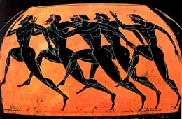

L'athlétisme remonte a l'Antiquité.Cette activitée était un loisir, ils se défiaient en vitesse, en endurance, en détente et en force. A l'époque on retrouve les traces de ces passages, par interval de ruines, des vases, des pientures et des écrits. Chez nos ancêtres, les messagers pratiquaient des courses de vitesse sur long durées et par relais de 3 à 5 km.
L’athlétisme figure au programme des Jeux olympiques depuis la première édition en 1896 pour les hommes, et depuis 1928 pour les femmes. Il est le sport qui compte le plus grand nombre d'épreuves lors des Jeux olympiques (47 au total en 2016) avec la natation. Les compétitions se déroulent généralement dans le stade olympique.